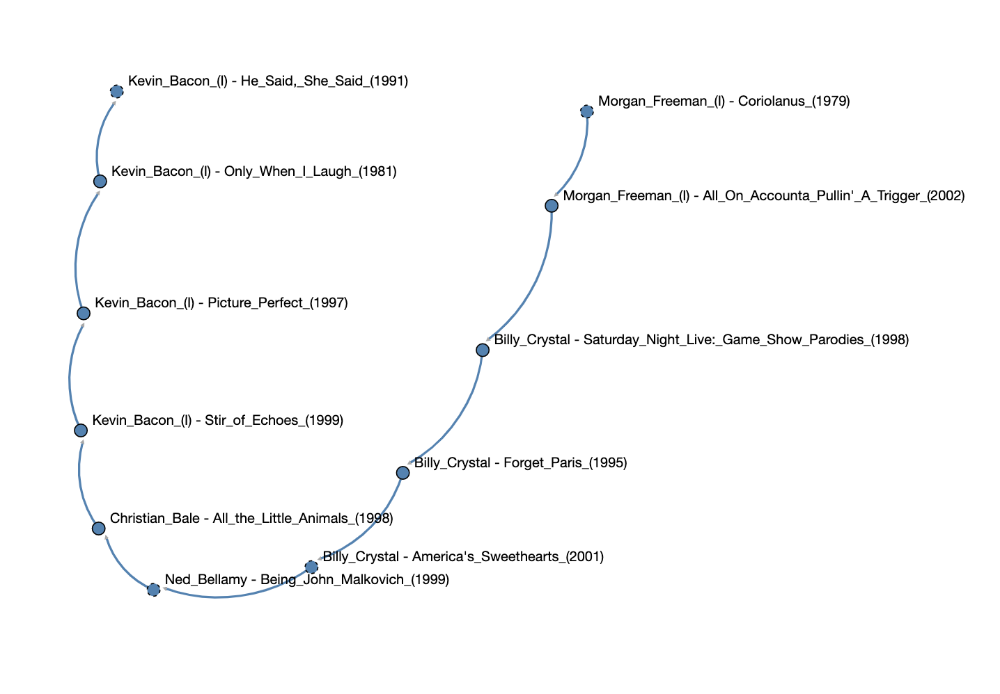

Assignment 1 - List IMDB
Goals
The purpose of this assignment is to learn to
1. Access remote data through BRIDGES.
2. Manipulate a linked list.
You will generate a visualization that looks like this:

Programming part
Task
Build a linked list containing each (actor, movie) pair that appears in
the Actor Movie IMDB data set.
Steps
- Open your base code.
- Plug in your credentials.
Compile and run the code and observe the basic linked list.
Build Actor Movie linked list
Change SLelement to be a list of ActorMovieIMDB.
- For each entry in the set of actor movie, create an
SLelement to store it with an explicit label.
- We recommend you add each new entry to the head of the list for simplicity.
- Compile and run the code and observe the linked list of (actor,movie) pairs.
Reference
Java
SLelement documentation
Element documentation
ActorMovieIMDB documentation
C++ Reference
SLelement documentation
Element documentation
ActorMovieIMDB documentation
Python Reference
SLelement documentation
Element Documentation